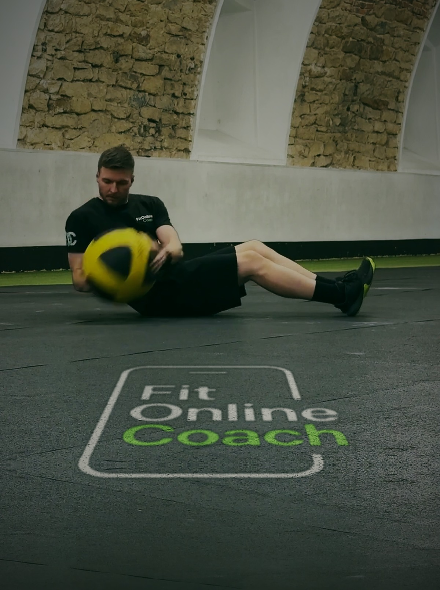

Trening — Dieta — Fizjoterapia
Trening,
Trening,
który
rozumiesz.
Plany treningowe z poradnikiem wideo do każdego ćwiczenia. Po polsku, konkretnie, bez ściemy — zawsze w Twoim telefonie.
Przewiń
Nie potrzebujesz kolejnej rozpiski, potrzebujesz planu, który zrozumiesz. I który zrealizujesz.
02 — Jak to działa
Trzy kroki
do pierwszego
treningu.
Bez skomplikowanych ustawień. Kupujesz, otwierasz, trenujesz.
01
Wybierz plan
Wybierasz plan dopasowany do swojego poziomu i celu. Płacisz raz — plan zostaje z Tobą.
02
Otwórz w telefonie
Plan działa w aplikacji, którą otworzysz na telefonie, tablecie i komputerze. W domu, na siłowni, w podróży — zawsze pod ręką.
03
Trenuj z wideo
Przy każdym ćwiczeniu masz poradnik wideo po polsku. Oglądasz, powtarzasz, robisz progres.
01 — Dlaczego FitOnlineCoach
Wiedza różnych specjalistów.
Jeden spójny plan.


Nie wiesz, jak wykonywać ćwiczenia?
Każde ćwiczenie w planie ma swój poradnik wideo. Widzisz dokładnie, jak się ruszać — bez zgadywania i bez ryzyka kontuzji.
Masz dość anglojęzycznych tutoriali?
FitOnlineCoach mówi do Ciebie po polsku, w zrozumiały sposób. Fachowa wiedza — bez fachowego żargonu.
Nie masz czasu na trening?
3 treningi w tygodniu po 40–60 minut — resztę zostaw życiu. Plan masz zawsze w telefonie, a treningi wpisujesz prosto do kalendarza.
Przesuń, żeby zobaczyć więcej
Zero ściemy.
Sam konkret.
03 — Plany treningowe
Zacznij od planu
dla siebie.

Dla początkujących
Kliknij kartę — zobacz szczegóły planu →
Początek
Plan dla osób, które chcą wystartować z treningiem — spokojnie, bezpiecznie i ze zrozumieniem tego, co robią.
- Poradnik wideo do każdego ćwiczenia
- Wszystko po polsku, krok po kroku
- Dostęp 24/7 w Twoim telefonie
tygodnietyg
treningitr
ćwiczeńćw
minutmin
Plan „Początek" od środka
Co dostajesz?
- 4 tygodnie treningu — 3 dni w tygodniu (pełne ciało)
- Każde z 50 ćwiczeń ma wideo pokazowe i instruktaż techniki
- Kalendarz treningów dopasowany do Twojego tygodnia
- Zapis wyników i sugerowane obciążenia
Czego potrzebujesz?
- Sprzęt cardio — rower, bieżnia albo wioślarz
- Drążek do podciągania oraz niski drążek lub kółka
- Dwa jednakowe kettlebelle i para hantli
- Sztanga z obciążeniem i stojakiem
- Skrzynia lub ławka, guma oporowa (powerband), piłka lekarska, skakanka
Przed rozpoczęciem treningów warto skonsultować się z lekarzem, fizjoterapeutą lub trenerem — zwłaszcza przy chorobach przewlekłych, kontuzjach, w ciąży lub po długiej przerwie od ruchu.
Nie musi być idealnie.
Ma być regularnie.
04 — O mnie
Cześć,
jestem Tomek.
Jako trener personalny, fizjoterapeuta i dietetyk patrzę na Twój trening z trzech stron naraz — dzięki temu plan jest skuteczny, bezpieczny i możliwy do pogodzenia z normalnym życiem.
Od 2010 roku codziennie planuję i prowadzę treningi dla swoich klientów, dlatego masz pewność, że moje plany treningowe to coś więcej niż Ctrl+C / Ctrl+V.
Wierzę w złoty środek — mądry ruch, proste zasady odżywiania i systematyczność, którą utrzymasz latami.
05 — Darmowa wiedza
Darmowe poradniki wideo
06 — Opinie
Co mówią osoby,
które już trenują.
Opinie są sprawdzane i pochodzą od prawdziwych użytkowników aplikacji.
07 — Częste pytania
Masz pytania?
Odpowiadam wprost.
Ile czasu zajmuje trening?
Treningi jednorazowo zajmą Ci 40–60 min. Zanim wybierzesz plan, możesz sprawdzić, ile treningów jest przewidzianych w tygodniu.
Pierwszy raz na siłowni — czy dam radę?
Tak, każdy plan został zbudowany i przedstawiony w ten sposób, aby był zrozumiały i możliwy do wykonania. Jeśli właśnie zaczynasz swoją treningową przygodę — sprawdź plan „Początek".
Czym różni się opieka indywidualna od gotowego planu?
Gotowy plan kupujesz raz i realizujesz samodzielnie w aplikacji. W opiece indywidualnej plan powstaje po wywiadzie zdrowotnym i treningowym specjalnie pod Ciebie, a w trakcie masz stały kontakt z trenerem na czacie i zmiany planu, gdy czegoś potrzebujesz. Szczegóły i ceny są w aplikacji.
Jaki sprzęt jest potrzebny?
To zależy od planu. Plan „Początek" robisz na siłowni — pełną listę sprzętu widzisz na karcie planu i w aplikacji, zanim kupisz. Plany do wykonania w domu, praktycznie bez sprzętu, są w przygotowaniu.
Jak długo mam dostęp do planu?
Bezterminowo — płacisz raz, a plan zostaje z Tobą. Chcesz przejść go drugi raz? Restart masz za darmo.
Czy mogę zwrócić plan po zakupie?
Plan to treść cyfrowa — dostęp otwiera się od razu po zakupie, za Twoją wyraźną zgodą, więc zgodnie z regulaminem prawo odstąpienia od umowy wtedy nie przysługuje. Dlatego kupujesz raz i sprawdzasz w spokoju — dostęp nie znika i nic Cię nie goni.
Mam kontuzję albo problemy zdrowotne — czy mogę trenować?
Przed rozpoczęciem treningów dobrze skonsultować się ze specjalistą — zwłaszcza jeśli masz niedawną kontuzję, leczysz się przewlekle, martwisz się swoim stanem zdrowia albo jesteś w ciąży. Regularne badania to część zdrowego trybu życia.
08 — Newsletter
Wskazówki treningowe na skrzynkę.
Co dostajesz za zostawienie adresu:
- konkretne wskazówki treningowe
- informacje o nowych planach
Zero spamu — wypisanie jednym kliknięciem.
Administrator danych: FitOnlineCoach prosta spółka akcyjna, ul. Żyzna 2, 40-314 Katowice, NIP 9542914095, kontakt@fitonlinecoach.com.